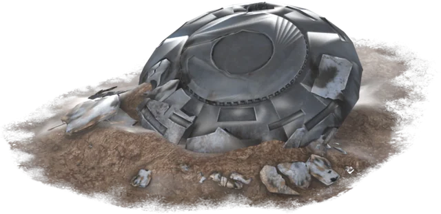
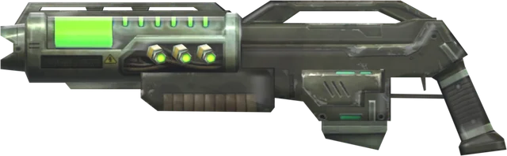
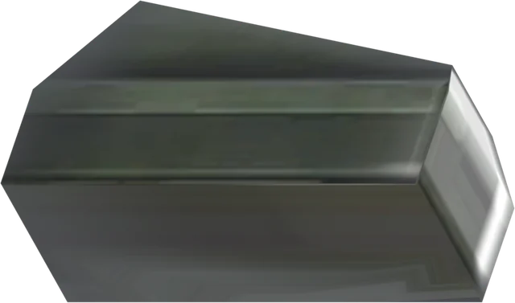
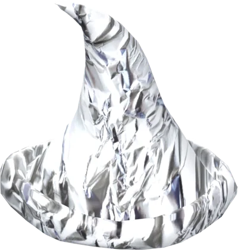
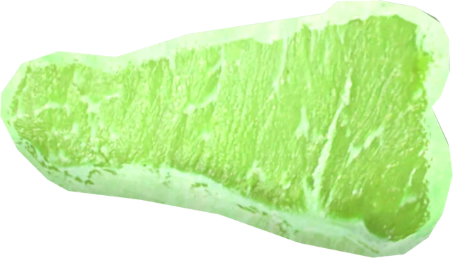
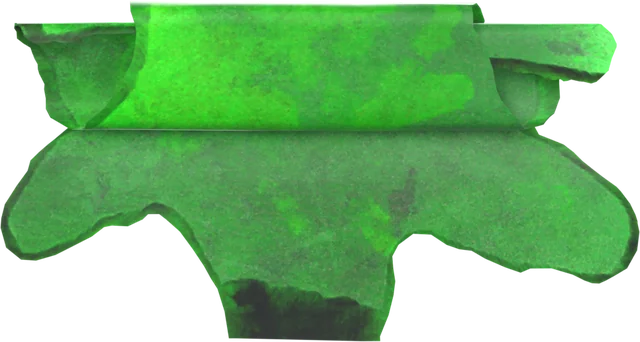
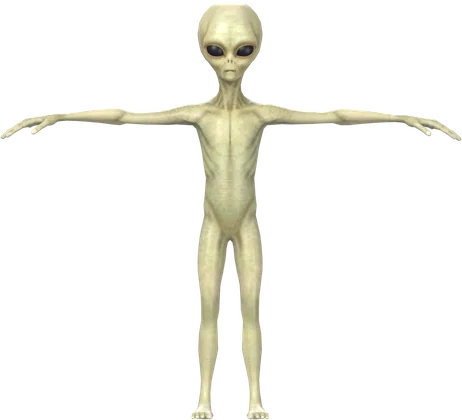

Mission briefing
Something came down in the night.
Alien Invasion adds a UFO crash dynamic event that works exactly like DayZ's vanilla helicopter crashes — the wreck is even built on the same CrashBase class. The difference: the site is wrapped in a toxic cloud, alien technology lies in the wreckage, and when survivors close in, 10–15 hostile aliens crawl out to meet them. Vanilla heli crashes are untouched and keep running alongside it.
UFO crash site
A custom wreck with green light, fire, mist, persistent particles, distant crash audio, and a toxic gas cloud that demands NBC gear.
Hostile visitors
Little Green Men with their own voices and footsteps. Up close they claw like infected; in the open they hit you with a psychic zap from up to 80 m.
Alien technology
Salvage the Montauk Rifle and plasma cartridges from the wreck. Its green bolts hit aliens twice as hard as earthly bullets.
Rechargeable cells
Plasma can't be unloaded or found loose — combine a cartridge with a 9V battery to recharge it. A full battery fills a full cartridge.
Tin foil hat
It works. Aliens lose track of anyone wearing an intact foil hat unless they're within arm's reach, and their psychic zaps can't get through.
Area 51 Steak
Skin an alien for steaks and a Roswell Hide. Cooked meat gives 90 seconds of green alien night vision; raw, burnt, or rotten meat gives food poisoning.
Server-tunable
Every number — alien counts, loot odds, gas zone, zap range, damage bonuses — lives in $profile:Gebs/alieninvasion.json.
Economy files generated
The server writes ready-made types, events, crash positions, and loot points into $profile:Gebs/mpmissions/ on first start.
Deployment protocol
Install Alien Invasion
Choose the player path for local use or the server path for a community server. The Workshop remains the authorized distribution source.
- 01
Open the Workshop page
Visit Alien Invasion on Steam and select Subscribe.
- 02
Let Steam download the mod
Wait for the DayZ Workshop download to finish before starting the launcher.
- 03
Join a compatible server
The official DayZ launcher can resolve and load the server's required Workshop mods automatically.
- 01
Download the Workshop item
Subscribe with the server's Steam account or retrieve Workshop item
2840597308using your normal SteamCMD workflow. - 02
Install and key the server
Place the published mod folder beside the DayZ server executable. Copy its
.bikeyfile into the server'skeysdirectory. - 03
Add the launch parameter
Load the mod in your server startup command. Keep the actual installed folder name if it differs from the example.
-mod=@alieninvasion - 04
Start the server once
On startup the mod writes its config and Central Economy files into the server profile folder (the one your
-profiles=launch parameter points to), next to Gebsfish's files if you run it:Server profile folder<profile>/Gebs/ ├── alieninvasion.json ← server settings (Config tab) └── mpmissions/ ├── alieninvasion-types.xml ├── alieninvasion-spawnabletypes.xml ├── alieninvasion-events.xml ├── alieninvasion-cfgeconomycore.xml ├── alieninvasion-cfgeventspawns.xml └── alieninvasion-mapgroupproto.xmlThey are only rewritten when the mod version changes, so your edits survive restarts.
- 05
Register the economy files
Copy the
types,spawnabletypes, andeventsfiles into a newalieninvasionfolder inside your mission (mpmissions/dayzOffline.<map>/alieninvasion/), then paste the block fromalieninvasion-cfgeconomycore.xmlinside<economycore>in the mission'scfgeconomycore.xml. Your owntypes.xmlandevents.xmlstay untouched. - 06
Merge positions and loot points
Paste the
StaticAlienCrashevent fromalieninvasion-cfgeventspawns.xmlintocfgeventspawns.xml, and thegeb_Aliencrashgroup fromalieninvasion-mapgroupproto.xmlintomapgroupproto.xml. On Chernarus you get 79 hand-picked crash sites; on any other map the generator borrows that mission's heli-crash positions. - 07
Restart and verify
Restart, check the script and RPT logs for
[AlienInvasion]lines, then visit a crash: loot and gas are there immediately, aliens appear once you're within 300 m.
Central Economy reference
What the generated files contain
If you have ever configured DayZ's StaticHeliCrash event, this is the identical pattern. The UFO is a helicopter-crash-style dynamic event: the wreck is registered in types.xml, the event is defined in events.xml, and its positions live in cfgeventspawns.xml — exactly like a heli crash. The only difference is what happens on site: the UFO script handles the aliens, loot, and gas itself. You never add alien spawns, infected events, or territories for it.
Prefer to paste by hand, or using a hosting panel's economy editor? These are the same entries the generator writes. Stop the server and back up the mission folder before editing it.
Important update
Do not copy the old Steam tutorial's InfectedAlien event or its <secondary>InfectedAlien</secondary> line. The wreck script already creates 10–15 aliens around each UFO. Keeping the old secondary event can produce duplicate or excessive alien spawns.
CE / 01Register the wreck in
Register the wreck in db/types.xml
Paste this entry anywhere inside the file's existing <types> ... </types> element. Do not add a second root element. The generated file also registers every item, the meat, and the hide.
db/types.xml
<type name="geb_Aliencrash">
<nominal>0</nominal>
<lifetime>2100</lifetime>
<restock>0</restock>
<min>0</min>
<quantmin>-1</quantmin>
<quantmax>-1</quantmax>
<cost>100</cost>
<flags count_in_cargo="0" count_in_hoarder="0" count_in_map="1" count_in_player="0" crafted="0" deloot="0"/>
</type>CE / 02Define the event in
Define the event in db/events.xml
Paste this inside the existing <events> ... </events> element. nominal is the target number of active crashes; lower it if three encounters are too many for your server.
db/events.xml
<event name="StaticAlienCrash">
<nominal>3</nominal>
<min>0</min>
<max>0</max>
<lifetime>2100</lifetime>
<restock>0</restock>
<saferadius>1000</saferadius>
<distanceradius>1000</distanceradius>
<cleanupradius>1000</cleanupradius>
<flags deletable="1" init_random="0" remove_damaged="0"/>
<position>fixed</position>
<limit>child</limit>
<active>1</active>
<children>
<child lootmax="15" lootmin="10" max="3" min="1" type="geb_Aliencrash"/>
</children>
</event>CE / 03Add locations to
Add locations to cfgeventspawns.xml
Paste the event inside <eventposdef>. The generated file already contains real positions; if you write it by hand, replace every example coordinate with a safe, open location from your map. Add as many <pos> lines as you want; x and z are map coordinates and a is rotation.
cfgeventspawns.xml
<event name="StaticAlienCrash">
<zone smin="1" smax="3" dmin="3" dmax="5" r="45"/>
<!-- Replace these examples with coordinates for your map. -->
<pos x="7500.0" z="7500.0" a="0.0"/>
<pos x="8000.0" z="7200.0" a="90.0"/>
</event>CE / 04Give the wreck loot points in
Give the wreck loot points in mapgroupproto.xml
The event asks for 10–15 loot items at each wreck, and the Central Economy can only place them where the wreck's group defines points. Paste the generated geb_Aliencrash group inside <prototype>. It uses vanilla Military usage (heli-crash loot); its comment explains how to switch to a custom UFO usage instead.
CE / 05
Validate, restart, and test
Check that each classname and event name matches exactly, validate the XML files, and restart the server. Watch the server RPT/script logs for XML or CE errors. To test quickly, spawn geb_Aliencrash with an admin tool on a dedicated server — it runs the full encounter too — or temporarily set nominal to 1.
What each file does: types.xml registers the spawnable objects, events.xml controls the dynamic event, cfgeventspawns.xml supplies its possible positions, and mapgroupproto.xml gives the wreck its loot points.
Based on the original Alien Invasion tutorial, updated for the current scripted encounter. See Bohemia's Central Economy reference for the underlying file format.
Do not repack the Workshop release.Use a Steam Collection to distribute the required mod to your players.
Contact sequence
How the crash encounter works
Think of it as a helicopter crash from another world: the Central Economy places the wreck exactly like a vanilla heli crash event, and the wreck then runs the encounter — effects, audio, toxic gas, salvage, and its own alien spawns.
Impact
geb_Aliencrash enters the world through the Central Economy and plays the distant crash sound for everyone in range.
Visual signal
Clients attach green illumination, UFO fire, wreck particles, and ground mist to the crash object.
Toxic cloud
An 18 m gas zone settles over the wreck. It uses DayZ's own contaminated-area rules, so NBC gear protects you. It disappears with the wreck.
Salvage
A 35% chance of a Montauk Rifle with a cartridge, plus up to two partly charged spare cartridges, lies 3–8 m from the wreck.
Contact
When a survivor comes within 300 m, 10–15 Little Green Men appear 5–25 m from the wreck. Until then nothing runs, so idle crash sites cost the server nothing.
Psychic attack
An alien chasing you with a clear line of sight zaps you from 4–80 m, at most once a minute each — a green burst and a crackle. Up close they claw like infected. A foil hat blocks the zaps.
Recovery
Skin dead aliens for Area 51 Steak and Roswell Hide. When the event ends and no one is within 1 km, the wreck, its gas cloud, and any surviving aliens are cleaned up together.
Active wreck

geb_Aliencrash
Use this classname when you want the complete scripted event: audio, client effects, gas, salvage, and alien spawning. On a dedicated server, spawning it with an admin tool runs the full encounter too (everything except the distant crash sound).
Visual prop
StaticObj_geb_Aliencrash
Use this for scenery or custom compositions. It displays the wreck model without running the encounter script.
Recovered materials
Field inventory
Nine public classnames cover the encounter, toxic cloud, creature, weapon, magazine, clothing, food, and harvested material.

Montauk Rifle
geb_PlasmaRifleA semi-automatic experimental rifle that fires visible green plasma bolts. Plasma deals double damage to aliens; every other firearm deals 75%.
- Fire mode
- Semi-auto
- Vs aliens
- ×2 damage

Montauk Cartridge
geb_PlasmaCartridgeA sealed plasma magazine that can't be unloaded. Combine it with a 9V battery to recharge — a full battery fills a full cartridge, a partial one adds what it can.
- Capacity
- 15
- Recharge
- 9V battery

Tin Foil Hat
geb_FoilHatAliens can't track an intact foil hat's wearer beyond 3 m, so they can't zap you either. A light 3×2 hat, not a helmet.
- Slot
- Headgear
- Protects
- Mind

Area 51 Steak
geb_GreenAlienMeatSkinning an alien gives two steaks. Eat it cooked (baked, boiled, or dried) for 90 seconds of green night vision; raw, burnt, or rotten meat gives food poisoning.
- Source
- Alien
- Cooked
- Night vision

Roswell Hide
geb_GreenAlienSkinA strange extraterrestrial hide recovered when skinning an alien.
- Source
- Alien
- Type
- Pelt

Little Green Man
geb_GreenAlienA hostile extraterrestrial with its own voice and footsteps. Infected melee up close, a psychic zap at range, and a green burst and scream when it dies.
- Zap range
- 4–80 m
- Harvestable
- Yes
Server tuning
alieninvasion.json
Created on first start at $profile:Gebs/alieninvasion.json, beside Gebsfish's configs. Every value is used on the server only, so nothing needs to be sent to players. Edit it with the server stopped; changes apply on the next start.
| Setting | Default | What it does |
|---|---|---|
CrashAliensMin / CrashAliensMax | 10 / 15 | How many aliens each wreck spawns. |
CrashAliensSpawnDistance | 300 | Metres a player must come within before a wreck's aliens appear. 0 spawns them as soon as the UFO crashes. |
CrashRifleChance | 0.35 | Chance (0–1) a Montauk Rifle with a cartridge lies in the wreckage. |
CrashSpareCartridgesMax | 2 | Up to this many partly charged spare cartridges per wreck. |
CrashGasZone | true | Surround each wreck with an 18 m toxic cloud (NBC gear protects). |
PsychicZapEnabled | true | Aliens zap the player they're chasing from mid range. |
PsychicZapMinRange / PsychicZapRange | 4 / 80 | Distance band in metres for the zap. Closer than the minimum they use melee. Needs a clear line of sight. |
PsychicZapCooldown | 60 | Seconds between zaps from the same alien. |
PlasmaDamageVsAliens | 2.0 | Damage multiplier for plasma bolts against aliens. |
OtherFirearmDamageVsAliens | 0.75 | Damage multiplier for every other firearm against aliens. |
FoilHatDetectRange | 3 | Aliens can't target a foil hat's wearer beyond this many metres. |
AlienVisionSeconds | 90 | Night vision from eating cooked alien meat. |
BadMeatPoison | 100 | Food-poisoning agents per bite of raw, burnt, or rotten alien meat. |
Safe to edit
Your values are kept
A broken file is never overwritten — the server logs the error and uses defaults for that session. The file is only rewritten on a mod update, which adds any new settings without touching yours. Out-of-range values are clamped (minimum never above maximum, chances 0–1).
Plain-language notes
Built-in help
The JSON includes …Info lines explaining each group of settings, so you can tune it without this page open.
Server reference
Classname database
Search or filter every public classname. Use the copy button to move a value directly into an economy, trader, or admin-tool configuration.
9 entries
| Classname | Type | Description | Copy |
|---|
No classnames match that search.
Troubleshooting
Frequently asked questions
Answers for common player and server-owner setup issues.
Does the mod replace vanilla helicopter crashes?+
No. Alien Invasion adds its own separate event that behaves like a heli crash — same dynamic-event system, same setup files — but with its own UFO wreck class and sound set. Vanilla crash events keep running untouched.
Where do the aliens come from? Do I configure their spawns?+
The wreck spawns them itself. Once a player comes within 300 m (CrashAliensSpawnDistance), the wreck places 10–15 aliens at random positions 5–25 m around it, and removes any survivors when it despawns. Do not add infected events, zombie territories, or any alien spawn configuration — that would only create duplicates.
Why did I spawn the static wreck and get no aliens?+
StaticObj_geb_Aliencrash is visual scenery only. Use geb_Aliencrash — through the Central Economy, or with an admin tool on a dedicated server — for the scripted encounter.
Something keeps hitting me from far away. What is it?+
A psychic zap: an alien chasing you, with a clear line of sight, hits you from 4–80 m, at most once a minute each, with a green burst and a crackle. Break line of sight, close the distance, or wear a tin foil hat — it blocks the zaps completely. Server owners can tune or disable it in alieninvasion.json.
Is the gas around the wreck dangerous?+
Yes. It's DayZ's own contaminated-area effect, so a gas mask and NBC suit protect you. The salvage lies inside it. Server owners can turn it off with CrashGasZone.
How do I recharge plasma cartridges?+
Combine a cartridge with a charged 9V battery (drag one onto the other, or hold one and use the action on the other). A full battery refills a whole cartridge; a partial one adds as many cells as its charge covers.
Does every player need the mod?+
Yes. It contains custom models, textures, sounds, particles, scripts, and localization, so it must run on the server and all clients.
Does Alien Invasion require Community Framework?+
No third-party mod is declared as a runtime dependency in the source.
Where are the mission XML files?+
The server writes them on first start into $profile:Gebs/mpmissions/ (see the Install tab). The mod never edits your mission folder itself — you copy the files in, so your own balance stays yours.
I changed alieninvasion.json and nothing happened.+
The file is read when the server starts, so restart after editing. If the server log shows [AlienInvasion] alieninvasion.json failed to load, the JSON has a syntax error (often a missing comma); the server runs on defaults until it's fixed, and your file is left untouched.
Can I include this in a server pack?+
No. Subscribe to the authorized Workshop release and use a Steam Collection for your server's mod list.
Transmission log
Changelog
What changed in each release. Server owners: 1.1.0 generates new economy files and a config on first start — see the Install tab.
Version 1.1.0 — fixes
- Montauk Rifle no longer locks up after the last shot in a cartridge. The script ran the FAL's bolt-lock logic on the Ruger 10/22 animations the config uses.
- Aliens have voices and footsteps. They were silent and filled server logs with "No sound callback" warnings.
- Alien attacks no longer land invisible hits from 100 m every 100 seconds: up close they use normal infected melee, at range the new visible psychic zap.
- Surviving aliens are removed with their wreck instead of piling up for the whole server uptime.
- Vanilla helicopter and sleigh crashes keep their distant crash sound with the mod loaded.
- The wreck's green light and fire/mist effects are removed when it despawns.
- Aliens spawn on the ground, in the configured 10–15 count.
- Skinning an alien now gives the Roswell Hide (the config named a class that didn't exist).
- The tin foil hat shows its name instead of its description, is hat-sized (3×2, 60 g), and no longer loads missing damage materials.
- The UFO wreck no longer needs another mod's Mi-8 textures.
- Plasma shots play one muzzle effect instead of two and stop logging "Plasma_Shot" warnings.
- Config patches no longer reuse a vanilla patch name and load after every vanilla class they extend.
- Removed the alien preparation recipe, which could never run (recipes can't use a corpse); skinning gives the steaks.
Version 1.1.0 — new
- Psychic zap: aliens hit their target from 4–80 m in line of sight, with a green burst and crackle.
- Tin foil hat works: aliens can't track you beyond 3 m and can't zap you.
- Toxic gas zone around each wreck; salvage (35% rifle, up to two spare cartridges) in the wreckage.
- Aliens appear when a player comes within 300 m, so idle crash sites cost nothing.
- Admin-spawned wrecks run the full encounter on dedicated servers.
- Recharge cartridges with a 9V battery.
- Green plasma bolts; plasma deals double damage to aliens, other firearms 75%.
- Alien death burst and scream.
- Cooked alien meat gives 90 seconds of green night vision; bad meat gives food poisoning.
$profile:Gebs/alieninvasion.jsonwith every setting, and generated economy files in$profile:Gebs/mpmissions/.- New strings translated into all 13 languages.
Version 1.0
First release: the UFO crash event, Little Green Men, the Montauk Rifle and Cartridge, the tin foil hat, Area 51 Steak and Roswell Hide.